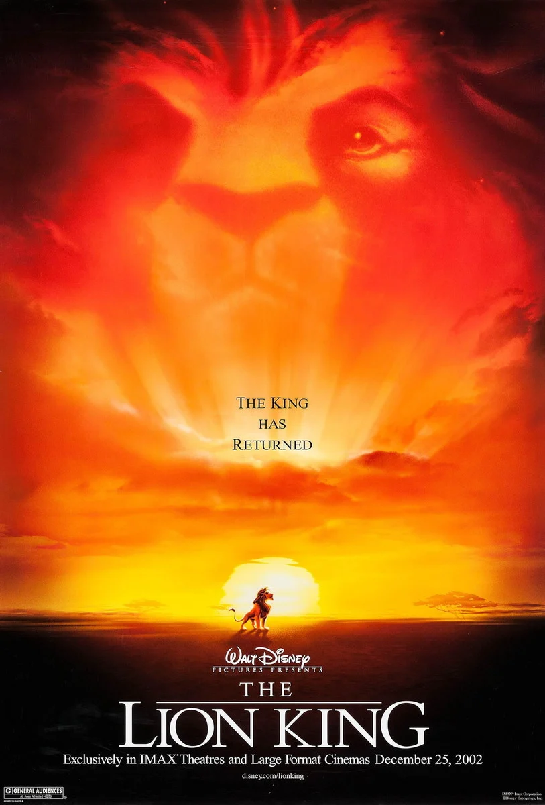
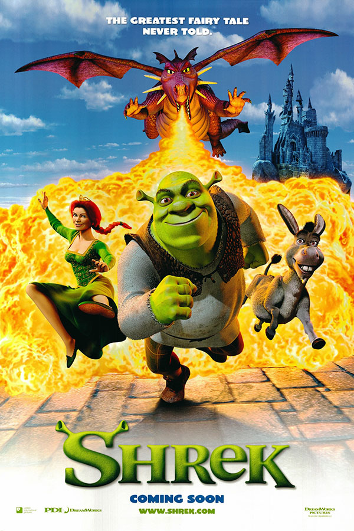
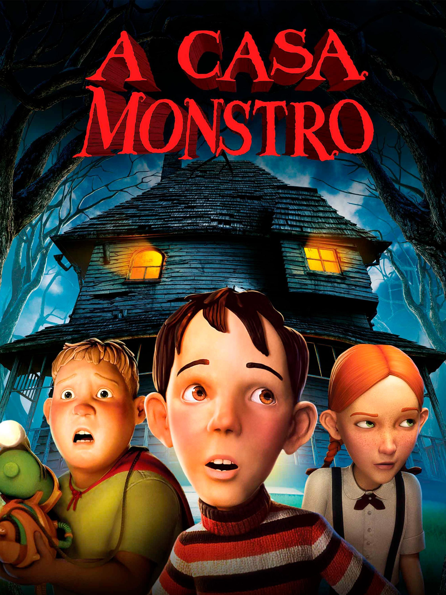

- O Rei Leão  Sinopse
- Viva – A Vida é uma Festa
- Shrek  Sinopse
- Divertida Mente
- A Casa Monstro  Sinopse
Este desenho animado da Disney mostra as aventuras de um leão jovem de nome Simba, o herdeiro de seu pai, Mufasa. O tio malvado de Simba, Oscar, planeja roubar o trono de Mufasa atraindo pai e filho para uma emboscada. Simba consegue escapar e somente Mufasa morre. Com a ajuda de seus amigos,Timon e Pumba, ele reaparece como adulto para recuperar sua terra, que foi roubada por seu tio Oscar.
Disney+ Sinopse
Sinopse
Apesar da proibição da música por gerações de sua família, o jovem Miguel sonha em se tornar um músico talentoso como seu ídolo Ernesto de la Cruz. Desesperado para provar seu talento, Miguel se encontra na deslumbrante e colorida Terra dos Mortos. Depois de conhecer um charmoso malandro chamado Héctor, os dois novos amigos embarcam em uma jornada extraordinária para desvendar a verdadeira história por trás da história da família de Miguel.
Disney+Um ogro tem sua vida invadida por personagens de contos de fadas que acabam com a tranquilidade de seu lar. Ele faz um acordo pra resgatar uma princesa.
Prime video Globoplay Sinopse
Sinopse
Com a mudança para uma nova cidade, as emoções de Riley, que tem apenas 11 anos de idade, ficam extremamente agitadas. Uma confusão na sala de controle do seu cérebro deixa a Alegria e a Tristeza de fora, afetando a vida de Riley radicalmente.
Disney+Nenhum adulto acredita quando três adolescentes falam que existe uma casa no bairro que é uma criatura perigosa. Com o Dia das Bruxas se aproximando, eles têm que descobrir uma forma de destruir a casa antes que ela faça mal a crianças inocentes.
Prime video MAX Netflix Globoplay